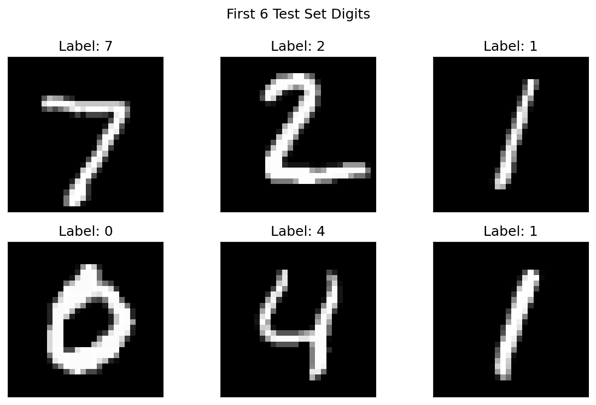
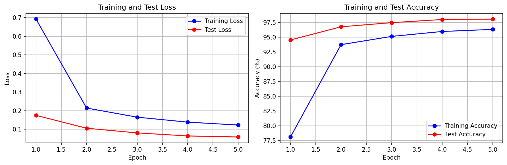
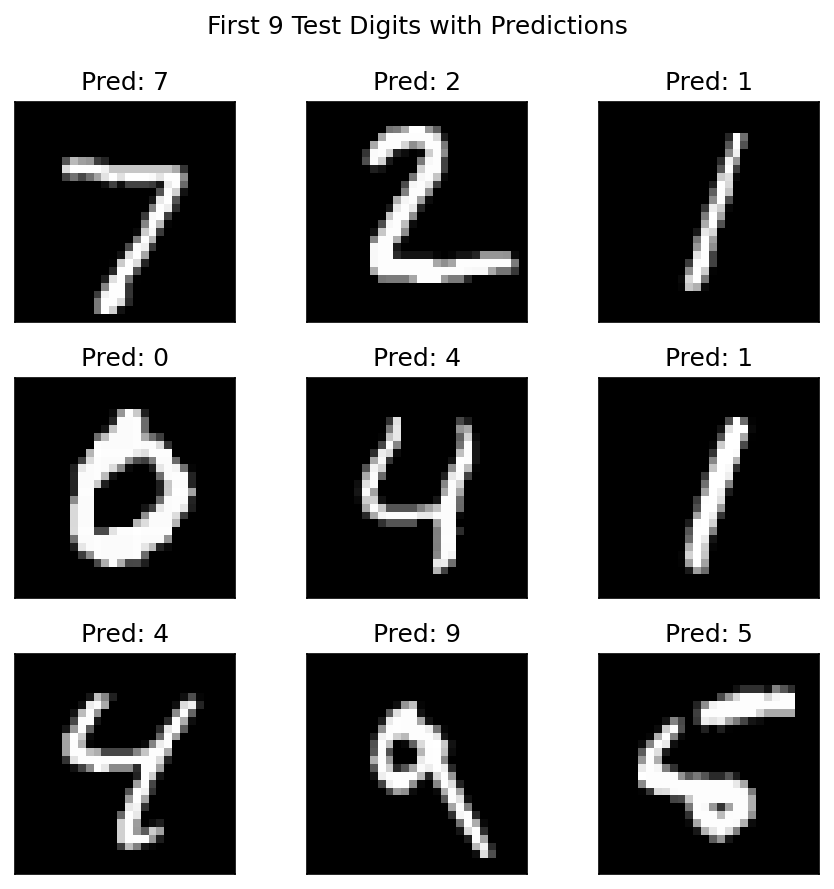
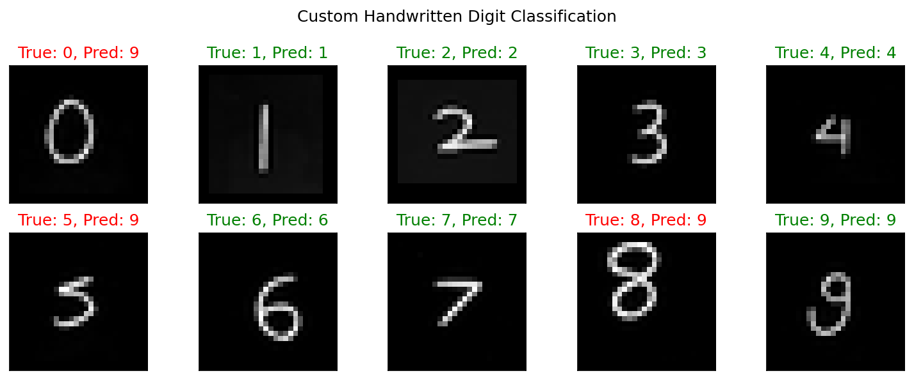
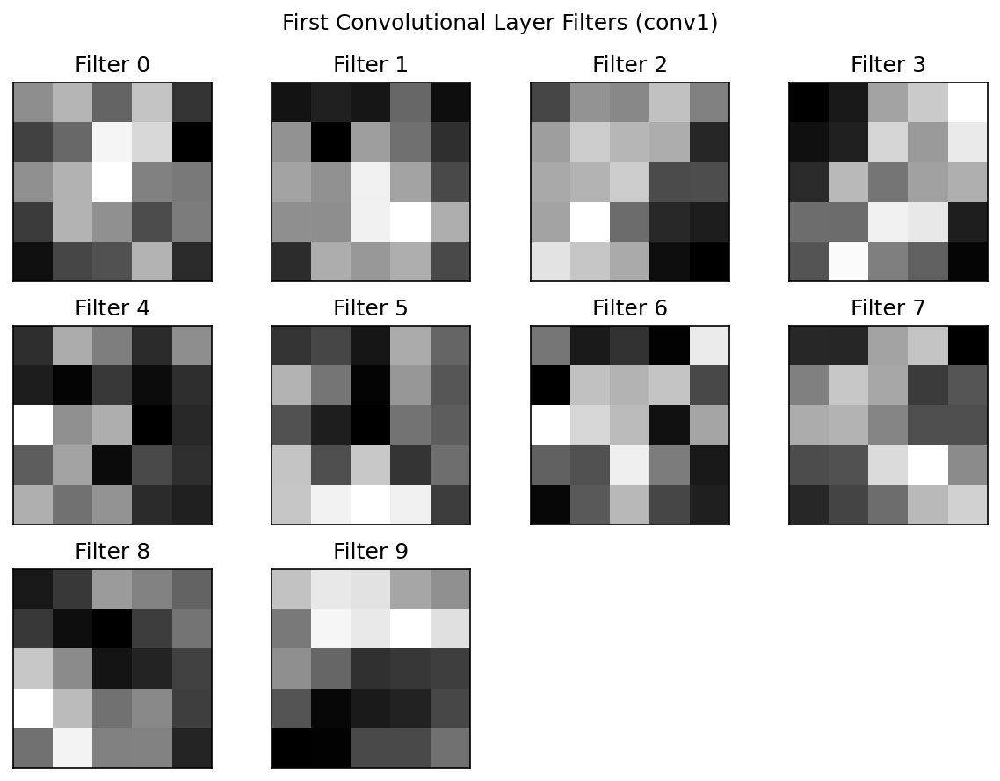
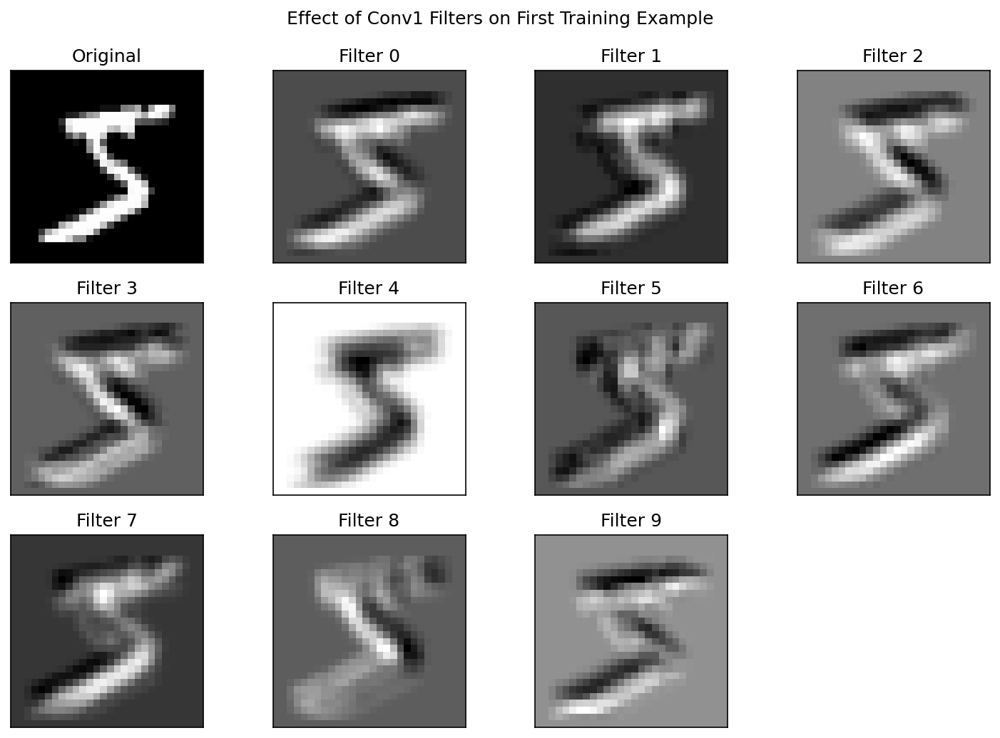
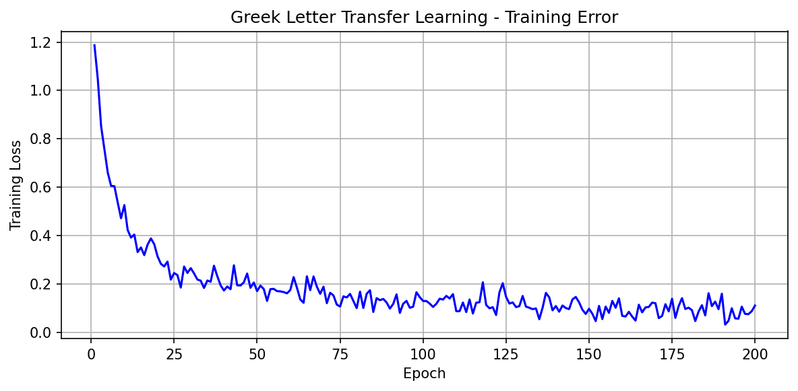
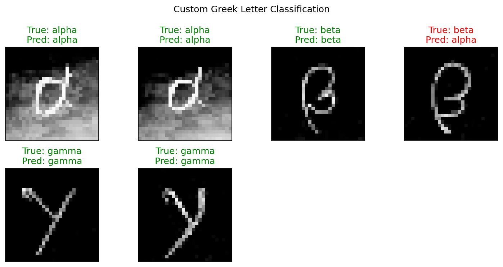
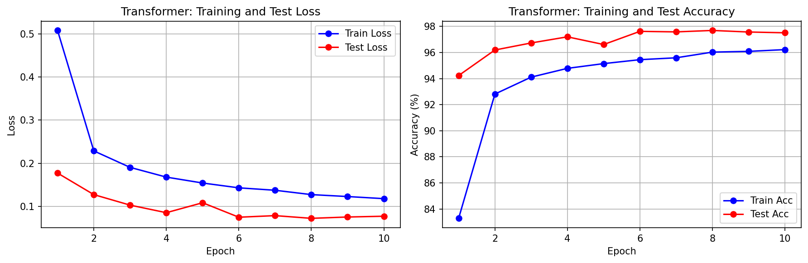
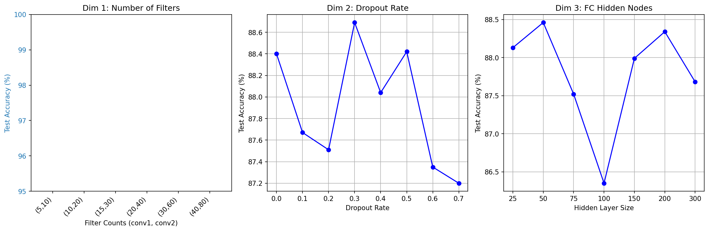

Name: Joseph Defendre, Sourav Das
Date: March 2026
This project explores deep learning for image recognition using the MNIST digit dataset and PyTorch. We built and trained a convolutional neural network (CNN) to classify handwritten digits, achieving over 98% test accuracy within 5 epochs. We then examined the learned filters and their effects on input images, applied transfer learning to recognize Greek letters (alpha, beta, gamma) using the pre-trained MNIST network, and re-implemented the classifier using a Vision Transformer architecture with patch embeddings. Finally, we conducted a systematic experiment evaluating network architecture variations along three dimensions — filter counts, dropout rate, and hidden layer size — using Fashion MNIST to compare the impact of each design choice on classification accuracy.
Loaded the MNIST dataset via torchvision.datasets.MNIST, which provides 60,000 training images and 10,000 test images of 28×28 grayscale handwritten digits. Images are normalized using mean=0.1307 and std=0.3081. Below are the first six example digits from the test set (without shuffling).

The network architecture follows the specification from the assignment. The MyNetwork class inherits from nn.Module and implements the following layer structure:
The first convolution learns 10 edge/texture detectors from the raw pixel input. After max pooling, the second convolution learns higher-order features from the first layer's activations. Dropout (50%) during training prevents co-adaptation of feature detectors. The fully connected layers map the 320-dimensional flattened feature vector to 10 digit classes via a 50-node hidden layer.
The model was trained for 5 epochs using SGD with learning rate 0.01 and momentum 0.5, using a batch size of 64. Training loss decreased steadily from 0.6339 in epoch 1 to 0.1147 by epoch 5, while test accuracy climbed from 95.36% to 98.11%.

The trained model weights are saved to results/mnist_model.pth using torch.save(model.state_dict(), ...). This allows the model to be loaded for subsequent tasks without retraining.
The saved model was loaded and set to evaluation mode (model.eval()) to disable dropout. The first 10 test examples were run through the network. For each example, the 10 output log-probabilities, predicted class, and true label are printed. The network correctly classified all 10 examples.
Idx | Network Output (10 values) | Pred | True | Match ------------------------------------------------------------------------------------- 0 | -17.44 -18.49 -10.03 -10.74 -24.37 -19.31 -31.96 -0.00 -13.44 -13.06 | 7 | 7 | YES 1 | -12.18 -9.83 -0.00 -16.28 -23.09 -23.76 -15.42 -16.96 -14.68 -33.23 | 2 | 2 | YES 2 | -12.31 -0.00 -8.63 -11.97 -8.31 -13.29 -11.64 -7.21 -9.54 -11.88 | 1 | 1 | YES 3 | -0.00 -23.97 -11.85 -17.06 -20.15 -17.85 -12.48 -14.74 -16.55 -14.03 | 0 | 0 | YES 4 | -16.70 -20.93 -13.73 -15.82 -0.00 -16.28 -14.19 -13.97 -14.27 -5.87 | 4 | 4 | YES 5 | -14.93 -0.00 -10.95 -13.44 -8.67 -17.21 -15.78 -8.04 -9.78 -12.82 | 1 | 1 | YES 6 | -26.12 -14.28 -16.19 -15.14 -0.00 -13.35 -23.55 -12.83 -5.63 -7.24 | 4 | 4 | YES 7 | -18.11 -14.77 -9.43 -6.64 -7.65 -7.64 -17.82 -11.03 -7.98 -0.00 | 9 | 9 | YES 8 | -13.35 -20.22 -12.85 -16.78 -12.61 -0.00 -7.29 -18.00 -6.86 -9.18 | 5 | 5 | YES 9 | -20.39 -23.47 -15.00 -10.58 -10.37 -16.33 -27.43 -6.10 -7.92 -0.00 | 9 | 9 | YES

Ten digits (0–9) were written by hand using a thick marker on white paper, photographed, and cropped to individual square images. Each image was converted to grayscale, resized to 28×28, and intensity-inverted to match the MNIST format (white digits on black background). The images were then normalized with the same MNIST mean and standard deviation before being passed through the network.

Note: Custom digit images should be placed in the custom_digits/ directory as 0.png through 9.png before running test_mnist.py.
The first convolutional layer (conv1) has weights with shape [10, 1, 5, 5] — 10 filters, 1 input channel, each 5×5 pixels. The filters are visualized below. Several filters appear to detect oriented edges at various angles, while others respond to specific spatial patterns or intensity gradients.

Each of the 10 filters was applied to the first training example using OpenCV's filter2D function. The resulting filtered images show how each filter responds to different features in the digit. Edge-detecting filters highlight strokes and contours, while others produce more uniform or textured responses depending on the local structure of the digit.

The results make sense given the filter weights: filters with strong horizontal gradients emphasize horizontal strokes, while those with diagonal structure highlight angled features. The diversity of filter responses explains how the network builds a rich representation from a single input image.
To classify Greek letters (alpha, beta, gamma) using the pre-trained MNIST network, we: (1) loaded the MNIST-trained MyNetwork model, (2) froze all parameters, (3) replaced the last fully connected layer (fc2) with a new nn.Linear(50, 3) layer for 3-class output. Only the new layer's weights are trainable.
The 27 Greek letter training images (133×133, RGB) were preprocessed using the provided GreekTransform class, which converts to grayscale, scales down, center-crops to 28×28, and inverts intensities to match MNIST format. Training used SGD with lr=0.01 and batch size 5.
Modified Network: MyNetwork( (conv1): Conv2d(1, 10, kernel_size=(5, 5)) (conv2): Conv2d(10, 20, kernel_size=(5, 5)) (conv2_drop): Dropout2d(p=0.5) (fc1): Linear(in_features=320, out_features=50) (fc2): Linear(in_features=50, out_features=3) ← replaced )

The network reached 100% accuracy on the 27 training examples by epoch 40, though due to dropout, accuracy fluctuated between 92.6% and 100% across subsequent epochs. The rapid convergence is expected because the frozen convolutional layers already extract meaningful edge and shape features from the MNIST pre-training, and only the 3-output classification layer weights need to be learned.

Note: Custom Greek letter images should be placed in the custom_greek/ directory before running transfer_learning.py.
The CNN was re-implemented as a Vision Transformer (NetTransformer) following the four-step process: (1) divide the 28×28 image into 7×7 patches with stride 7, yielding 16 patch tokens; (2) embed each patch via a linear layer into a 64-dimensional token, add a learnable CLS token and positional embeddings, then pass through a 2-layer Transformer encoder with 4 attention heads and MLP dimension 128; (3) use the CLS token output as the image representation; (4) classify via a linear hidden layer (64→128, ReLU, dropout) followed by the output layer (128→10, log_softmax).

With the default settings (patch_size=7, dim=64, depth=2, heads=4, 81,034 total parameters), the Transformer achieved 97.7% peak test accuracy after 10 epochs using the Adam optimizer with lr=0.001. Training accuracy reached 96.2% by epoch 10 while test loss stabilized around 0.07. While the CNN converged faster and achieved slightly higher accuracy (98.11%) with fewer epochs, the Transformer demonstrates that self-attention over image patches can effectively learn digit classification without any convolution operations.
We conducted a systematic experiment on Fashion MNIST to evaluate the effect of three network architecture dimensions. Fashion MNIST was chosen over MNIST digits because it is more challenging and provides more room to observe the impact of architecture changes.
We used a linear search strategy: optimize one dimension at a time while holding the others constant at the current best. The base configuration was: filters=(10,20), filter_size=5, fc_hidden=50, dropout=0.5, pool_size=2. Each configuration was trained for 5 epochs with SGD (lr=0.01, momentum=0.5) and evaluated on the Fashion MNIST test set. In total, approximately 21 configurations were evaluated across the three dimensions.

Dimension 1 (Filters): As hypothesized, accuracy improved with more filters, from 83.55% with (5,10) up to 87.94% with (40,80). Training time increased roughly linearly from 61s to 121s. The trend supports the hypothesis that more filters capture more diverse visual features, though returns diminished above (15,30).
Dimension 2 (Dropout): The best accuracy was 88.69% at dropout=0.3, with 0.0 (88.40%) and 0.5 (88.42%) also performing well. High dropout (≥0.6) degraded performance to 87.2–87.4%, confirming that excessive dropout prevents effective learning. The hypothesis about moderate dropout was supported, though the optimal rate (0.3) was slightly lower than expected.
Dimension 3 (Hidden size): The best accuracy was 88.46% with 50 hidden nodes. Surprisingly, increasing to 100–300 nodes did not improve performance (86.35–88.34%), partially contradicting the hypothesis. This suggests the convolutional layers already extract sufficiently rich features that a small FC layer can classify, and larger layers may introduce unnecessary parameters that are harder to optimize in 5 epochs.
No extensions were implemented for this project.
This project provided a comprehensive hands-on introduction to deep learning for computer vision. Building the CNN from the ground up in PyTorch made the roles of convolution, pooling, dropout, and fully connected layers concrete. Watching the training loss decrease and accuracy climb over epochs gave an intuitive feel for how gradient descent optimizes network parameters.
Examining the first-layer filters revealed that the network learns interpretable edge detectors resembling Gabor filters, which was satisfying to see emerge from random initialization through backpropagation alone. The filter effect visualization confirmed that these learned features meaningfully decompose the input into orientation-sensitive components.
Transfer learning demonstrated the power of feature reuse: the convolutional layers trained on digits already extracted useful edge and shape features that transferred directly to Greek letter recognition. Only retraining the final classification layer was sufficient to achieve near-perfect accuracy on 27 examples, highlighting how pre-trained features generalize across related visual tasks.
Implementing the Transformer architecture provided insight into how self-attention can replace convolution for image classification. While the Transformer required more epochs and careful hyperparameter tuning to match the CNN's performance, it demonstrated that global attention over image patches is a viable alternative to local convolution operations.
The architecture experiment on Fashion MNIST reinforced the importance of systematic evaluation. The linear search strategy allowed efficient exploration of the design space, and the results confirmed general deep learning intuitions about capacity, regularization, and diminishing returns. Automating the evaluation process was valuable for maintaining consistency and enabling reproducibility.
PyTorch tutorials and documentation were referenced for network architecture and training loop design. The Greek letter training images were provided as part of the course materials by Professor Bruce Maxwell. The MNIST and Fashion MNIST datasets are provided by the torchvision package.
Time travel days used: 0